How to Work with Git Branches: Part 1 - VS Code
Clone Repository
Create Issue and Branch
Write Code
Imitate Changes Made by Another Developer
Commit Your Code
Create Pull Request and Note Merge Conflict
Merge Updates from Main Branch to Your Feature Branch. Resolve Merge Conflict
Create New Pull Request
Finish Work in VS Code
In this post we will see a typical way to organize Git work on a project with other developers. We will
consider VS
Code and Intellij IDEA.
Create an empty GitHub repository, let’s say “git-demo”. Next, create a demo file “file1.txt” with an
initial content:
This is an
initial content.
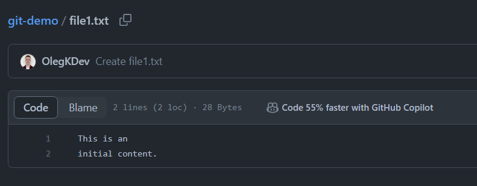
Clone Repository
Clone your repository to your local machine and open the repository in VS Code.
In the bottom left corner ensure that you are on the “main” branch. Click on a circle with arrows to get
all updates from the “origin/main” branch to your local “main” branch (IDE performs the “git pull”
command to get all updates behind the scene).
Outline
Create Issue and Branch
Now, imagine that you have an issue to work on. Go to the “Issues” tab and create your issue, let's say “My Task”.
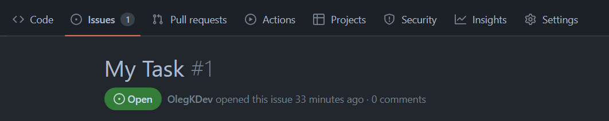Next, create a new local branch “feature/1-My-Task”. You can use another naming convention to name your branches. I prefer this one because it indicates that I work on a feature (not on a fix, build, or docs), number of the issue is 1, and a name of the task. Press on the “main” branch in the bottom left corner and select “Create new branch”.
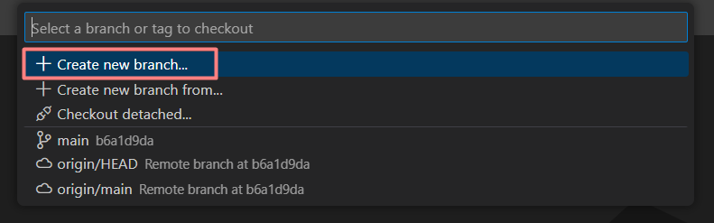Type your branch name and press Enter.
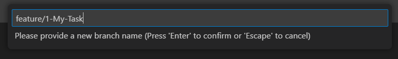In the bottom left corner you will see that you are on your new branch.
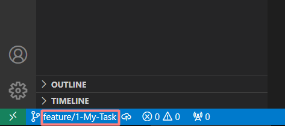Outline
Write Code
Write your code.
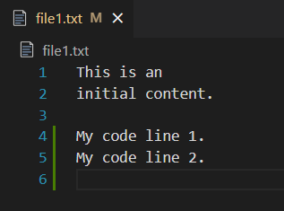Outline
Imitate Changes Made by Another Developer
Now, imagine that another developer had been working on her/his branch and had pushed those changes to
the “main” branch. Let’s imitate this situation.
Go to the GitHub repository and edit “file1.txt” directly in the “main” branch.
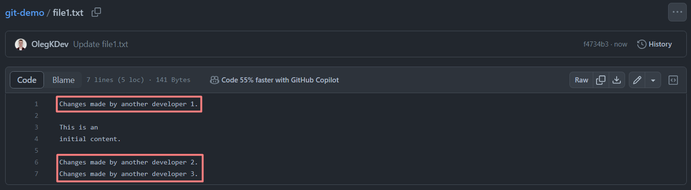
Outline
Commit Your Code
Note, that your code was written on lines 4 and 5. And now these lines are occupied by another code (what is known as a “Git conflict”). Return back to VS Code. Assume you don’t know about those changes. Simply commit your new branch with your changes.

I prefer to add a commit description same as an issue name with issue number.
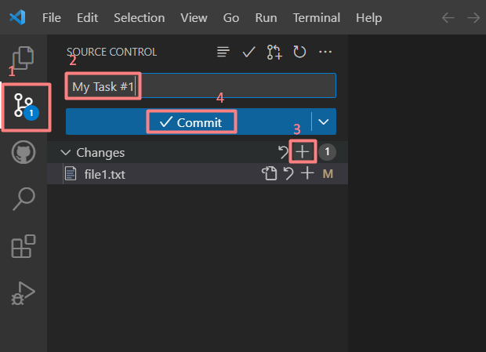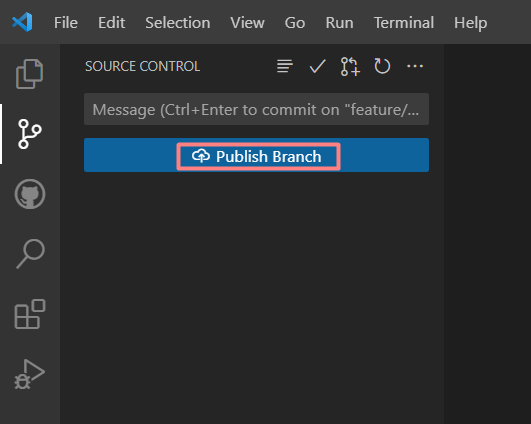
Outline
Create Pull Request and Note Merge Conflict
Go to the GitHub repository, you will see a popup “Compare & pull request”.
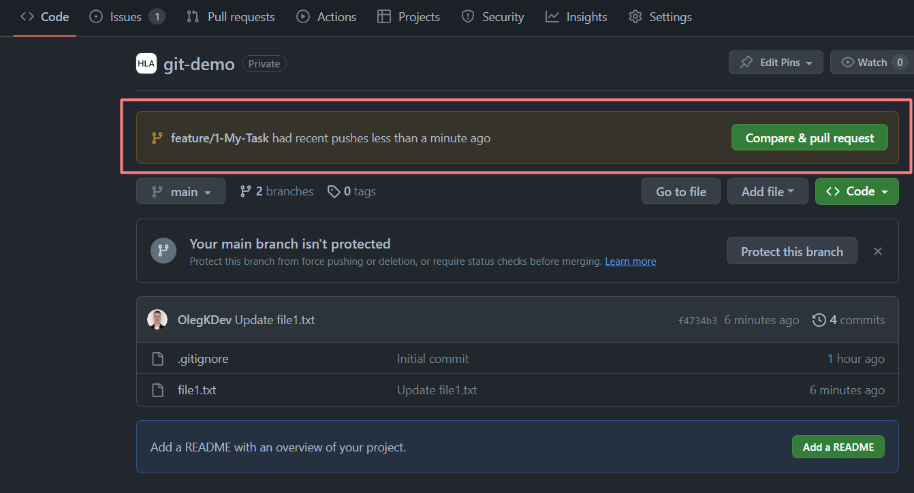If there is no auto popup, then go to the “Pull requests” tab and select “New pull request”.
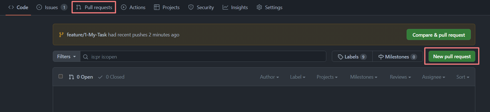Select your branch to merge into the “main” branch.
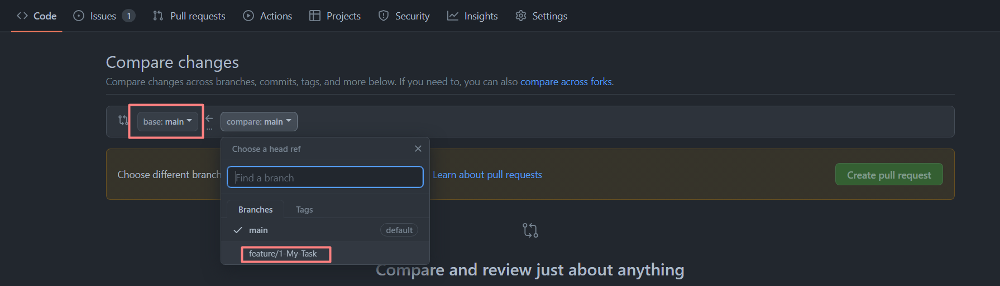As we can see, there is a message that GitHub “Can’t automatically merge” our “feature/1-My-Task” branch into the “main” branch.
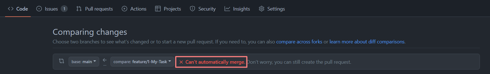
The reason behind this is that you have created your branch from a “main” branch state that is not
relevant any more (now it is in the “past”, since another developer updated “main” branch).
So, we need firstly update our “feature/1-My-Task” branch, and after this push our commits. When another
developer had been working on her/his task, perhaps she/he didn’t know about our work on our branch. And
that’s why new code from the “main” branch may affect the same files and lines of code that we work on.
Synchronization of these changes is known as “Git conflict resolving”.
Merge Updates from Main Branch to Your Feature Branch. Resolve Merge Conflict
Return back to VS Code. Checkout to the “origin/main” branch (in the bottom left corner).
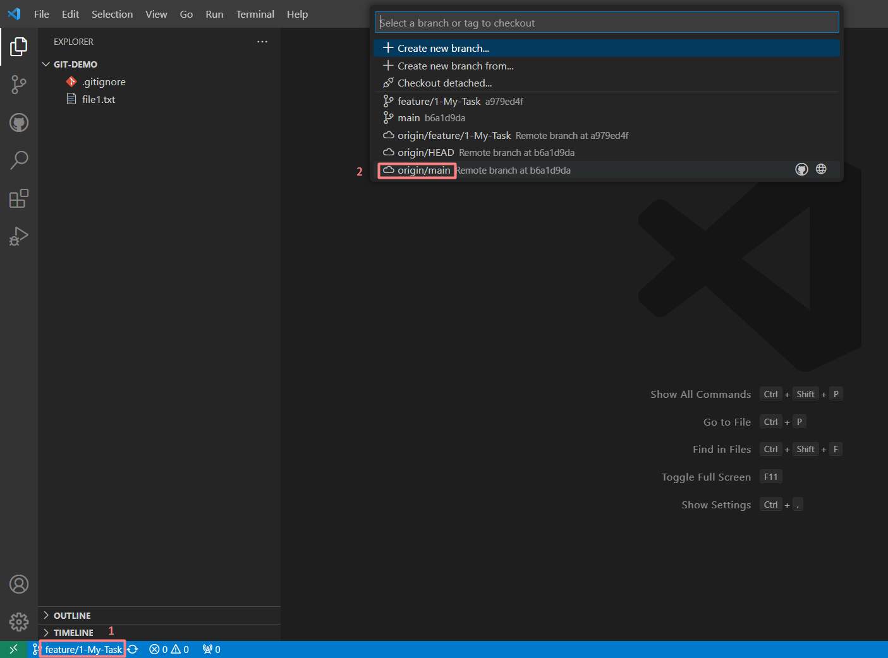As we can see, there is an initial state of the “main” branch.
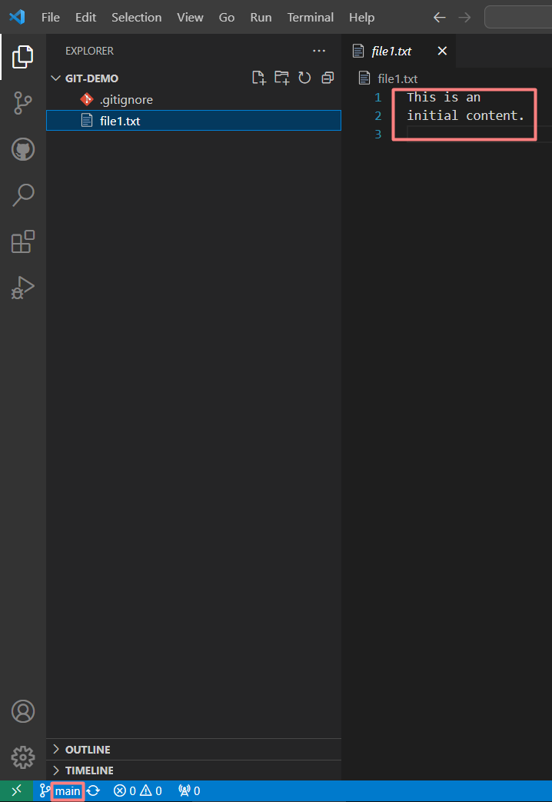Click on the circle with arrows to get updates from the “origin/main” branch.

Now, we have an updated state of the “main” branch including changes made by another developer.
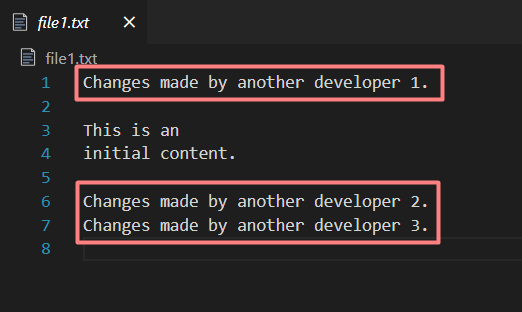
However, there is still no connection between those updated and our branch “feature/1-My-Task”. To fix
this we need to merge the “origin/main” branch to “feature/1-My-Task”.
Checkout to “origin/feature/1-My-Task”.
Then, go to Source Control tab (left side panel) > Three dots > Branch > Merge Branch. And select a branch to merge from. A branch to merge from is “origin/main” (it will be merged with its updates to the “feature/3-My-Task” branch).
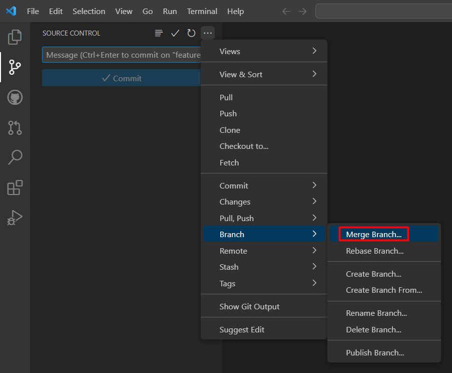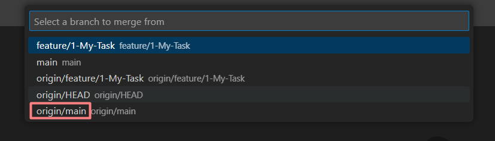
As we expected, there is a Git merge conflict.
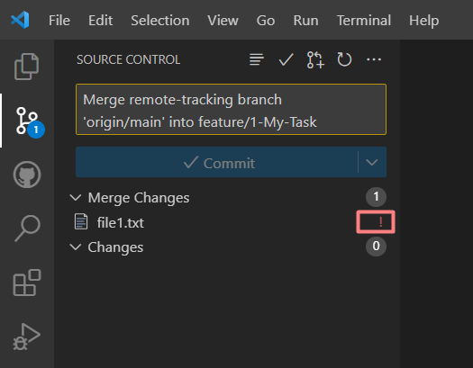Click on the “file1.txt” in the explorer to open the Resolve conflict manager.
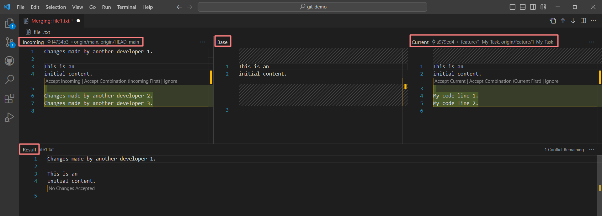We can see three columns: (1) Incoming from “main” branch, (2) initial state of “main” branch, and (3) our code. Below we see a Result column that will contain the final version of our code including updated code from the “main” branch.
The point is that another developer and we worked on the same file and same lines of code, so the Git
doesn't know which code has a priority to stay. We have to explicitly command what a final version of
our code should look like.
The simplest option is to select Three dots > Accept All Changes from Left.
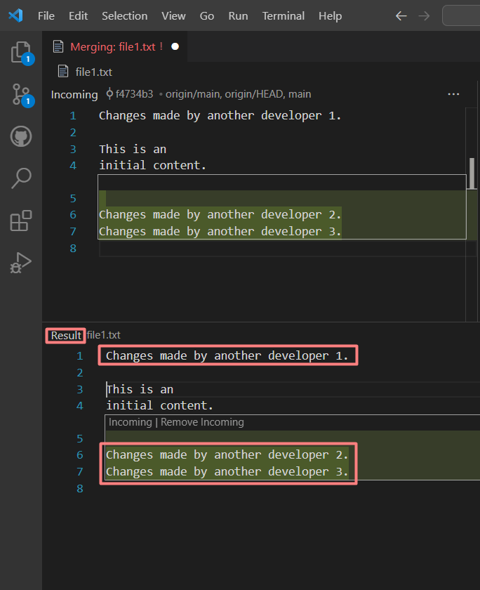
Similarly, Three dots > Accept All Changes from Right.
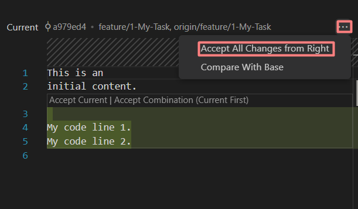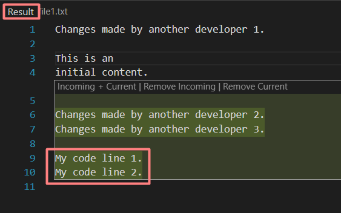
However, it might not be what we want. So, we can type what we need in the Result section directly.
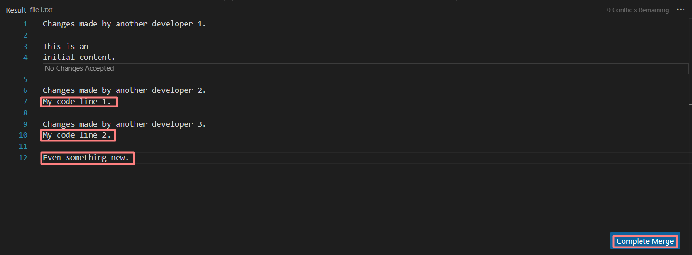Click on a “Complete Merge” button. Git conflict is resolved. Now, we can commit our code (including changes merged from the “main”branch).
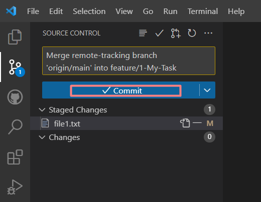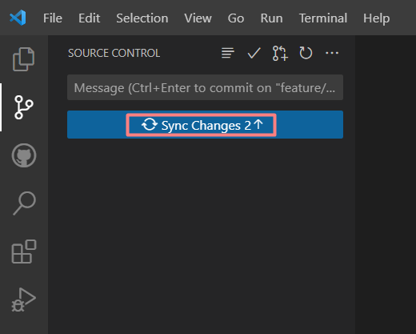
Outline
Create New Pull Request
Return back to a GitHub repository. Click “Compare & pull request”.
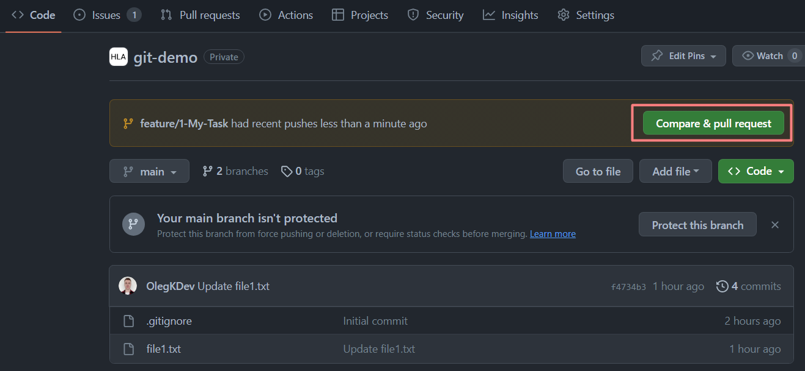Now, we can see that GitHub is able to merge the “feature/1-My-Task” branch into the “main” branch.
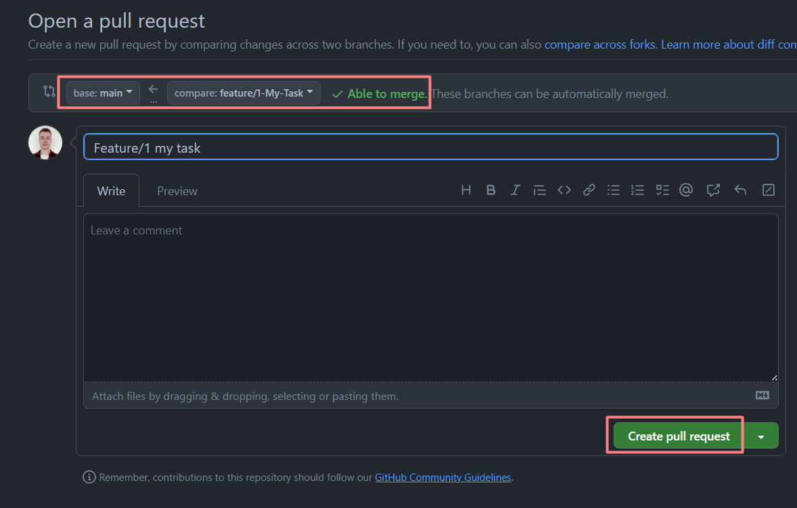Click “Create pull request”. Then “Merge pull request” or “Squash and merge” (if you don’t know what to choose, then choose “Merge pull request”).
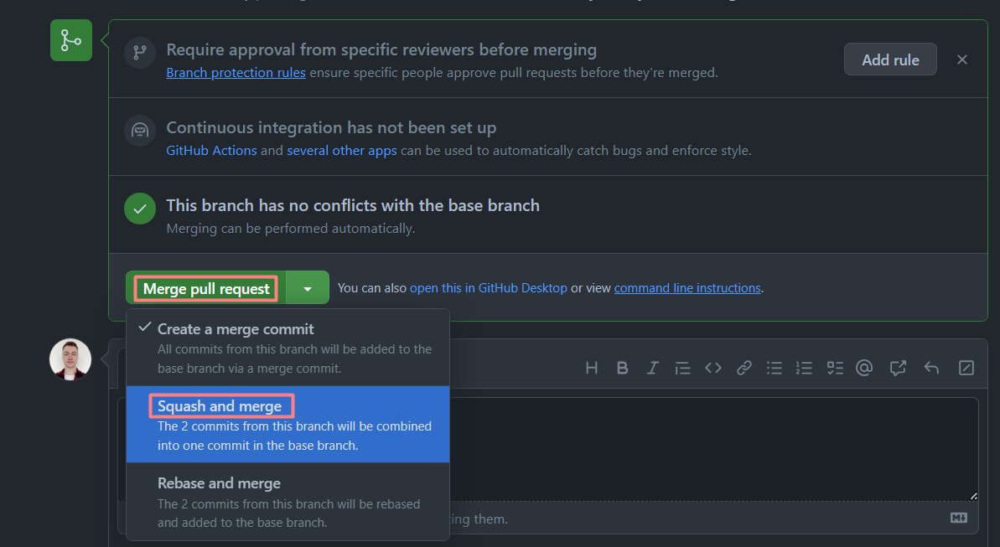Now, “file1.txt” in the “main” branch looks exactly as we defined during merge conflict resolution.
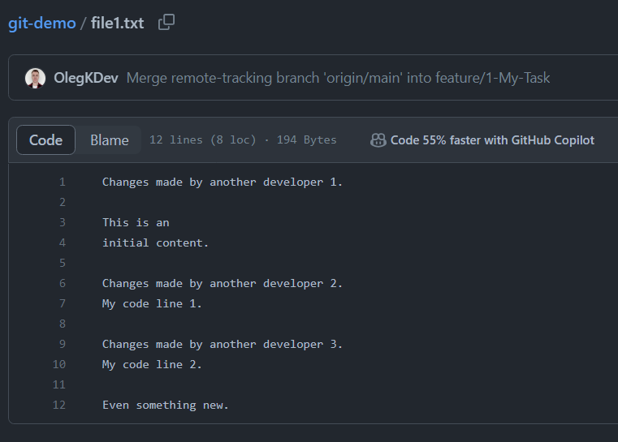Outline
Finish Work in VS Code
Return back to VS Code. Now you are on your “feature/1-My-Task” branch. Since your work is completed, checkout to the “origin/main” branch.
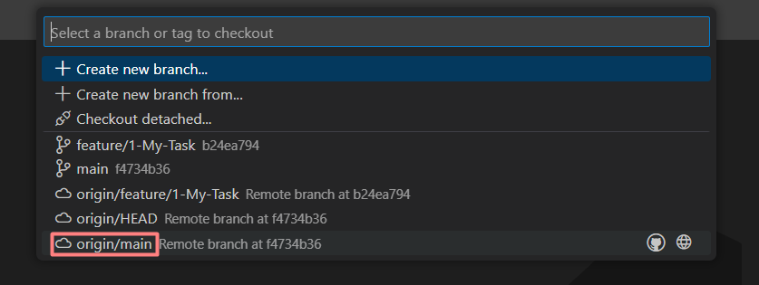As we can see, “file1.txt” has code before merging.
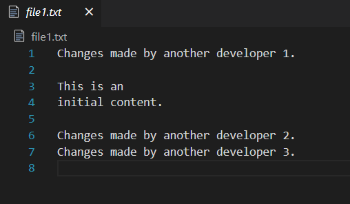Click on a circle with arrows to get updates from the “origin/main” branch, including your previously pushed code.
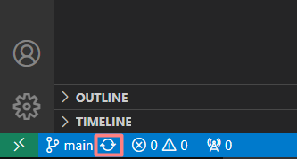Now, we have a current state of the “main” branch on our local machine.
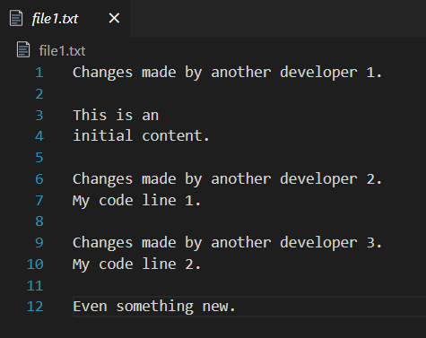Outline